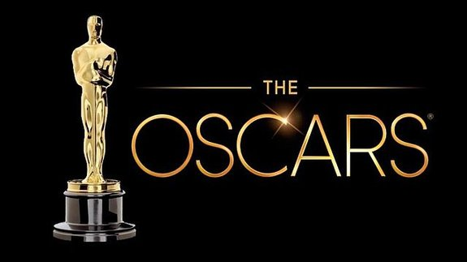

Премія Оскар слугує найкращою рекламою для фільму і рекомендацією до його перегляду. Фільми, відзначені премією Оскар, не кажучи вже про декілька трофеїв, автоматично збільшують касові збори і набувають популярності. Фільми із премією Оскар отримують свій трофей щорічно, починаючи з 1929 року, у Лос-Анджелесі в районі Голлівуд.
Сьогодні фільми премії Оскар борються за звання найкращого зі списку, розширеного до 10 картин. До 2009 року фільми на премію Оскар були представлені з 5 кінострічок. Премія Оскар за найкращий фільм вважається найпочеснішою номінацією в галузі кінематографу.
В ніч з 4 на 5 березня 2018 року в Лос-Анджелесі відбудеться 90-а церемонія нагородження кінопремією "Оскар" - однією з найпрестижніших кінонагород.

Головні фільми року
Фільм
Номінації
Перемоги
«Форма води»
13
4
«Дюнкерк»
8
3
«Три білборди на кордоні Еббінг, Міссурі»
7
2
«Темні часи»
6
2
«Примарна нитка»
6
1
Номінанти премії Оскар «Найкращий фільм року» 2018:
«Клич мене своїм ім’ям»
«Темні часи»
«Дюнкерк»
«Геть»
«Леді Берд»
«Примарна нитка»
«Секретне досьє»
«Форма води»
«Три білборди на кордоні Еббінг, Міссурі»
Перемогу здобув фільм "Форма води" режисера Гільєрмо дель Торо.